Why use a PCB instead of a breadboard?
Breadboards are fine for quick experiments, but any serious project — high-speed, SMD-heavy, or production-ready — demands a PCB. Most modern ICs (BGA, QFN, TSSOP) cannot even be prototyped on a breadboard at all.
Breadboard ✅
Fast prototyping, easy probing, easy circuit edits with jumper wires.
Breadboard ❌
High parasitic capacitance, unreliable, can't use SMD packages, hard to replicate.
PCB ✅
Professional & compact, repeatable, controlled parasitics, high-speed capable, mass-producible.
PCB ❌
Longer design cycle, fab cost, hard to modify post-fab, requires CAD knowledge.
Getting started — projects, files & libraries
Open EAGLE → File → New → Project. Right-click the new project → New → Schematic. Save everything inside the project folder so schematics, board files and CAM jobs stay together.
- Schematic library — symbols you place on the schematic sheet.
- Footprint (PCB) library — physical land patterns and pad layouts.
- Integrated library — combines symbol + footprint into one component (recommended).
EAGLE ships with broad default libraries: rcl for passives, supply1/supply2 for power symbols, frames for sheet borders. The free edition limits boards to 4 × 3.2 inches and 2 copper layers — more than enough for most student projects.
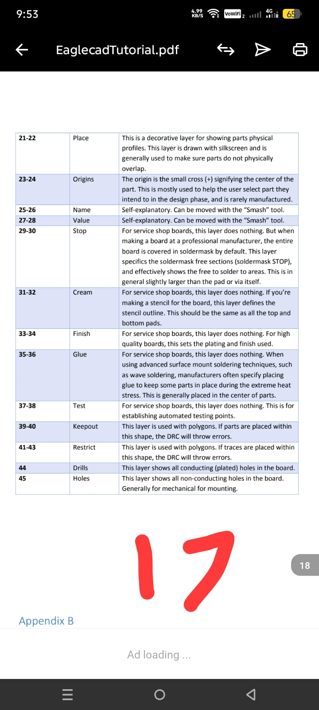
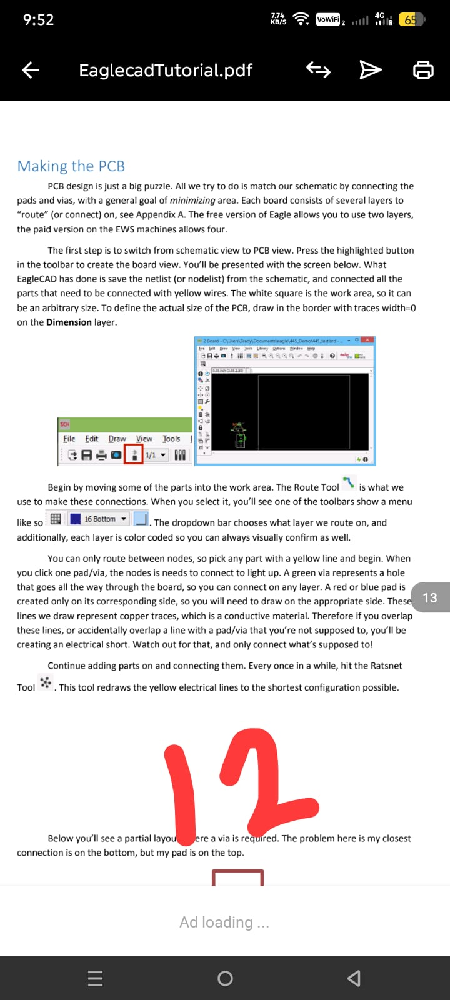
Schematic capture — the toolbar that matters
You'll spend 90% of schematic time with just a few tools. Learn these and you can capture any circuit:
ADD
Open the library browser and place a component symbol on the sheet.
MOVE
Left-click to grab, right-click to rotate 90°, left-click again to drop.
NET (wire)
Connect pins. Right-click while drawing to change bend style.
NAME / LABEL
Rename a net (e.g. VCC, GND) and show it on the sheet.
VALUE
Set the value (10kΩ, 100nF…) of a placed passive component.
JUNCTION
Force an electrical connection at a wire crossing point.
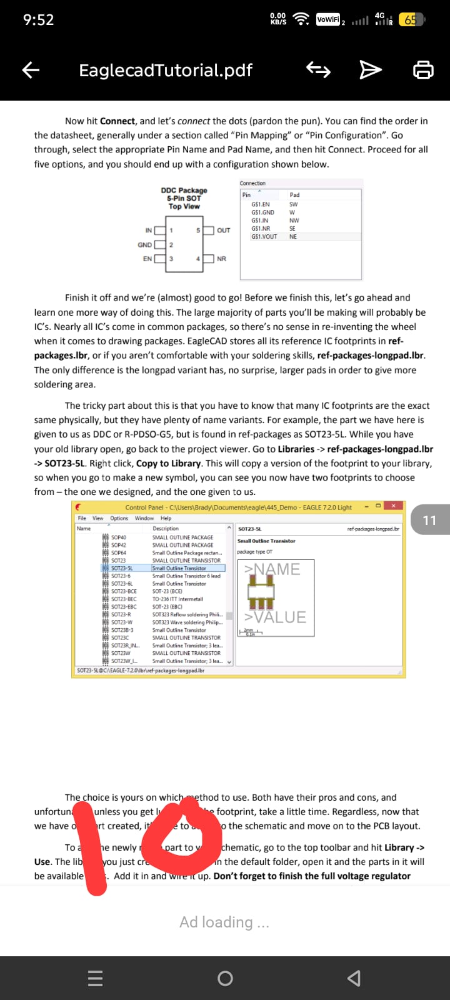
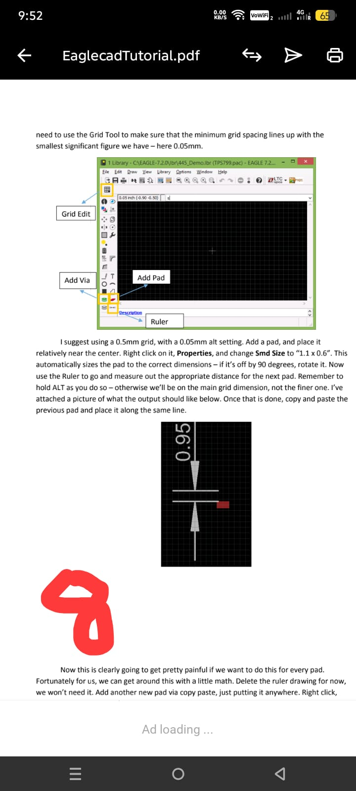
frames library — it gives you a clean print boundary and a proper title block.Placing components — passives, ICs and pads
Use ADD and search with wildcards: typing *741* finds the LM741 op-amp in the linear library. How to recognize a footprint type:
- Through-hole footprints show green circles (drill holes with annular rings).
- Surface-mount footprints show red squares (SMD pads on the copper layer).
For external connections (power input, signal output connectors) use pads from wirepad → 2,54/1,1 — these become solder-in holes for wires.
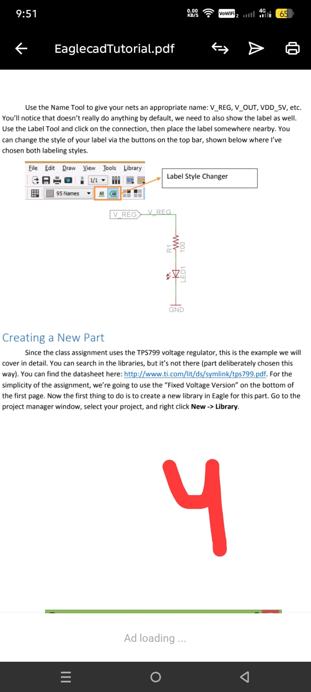
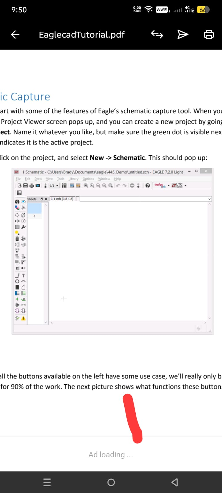
0805 = 0.08″ × 0.05″. Larger packages handle more power; smaller packages perform better at high frequencies.Wiring & net naming — keeping the schematic readable
Use the NET tool to draw wires between pins. To avoid spaghetti, use NAME: rename floating wire ends to the same label (e.g. GND) and EAGLE treats them as connected — even without a physical wire drawn across the sheet. Then use LABEL to show the name visually.
- Add a
GNDsymbol fromsupply1library. - Connect the resistor's bottom pin to it with a short wire.
- Name the capacitor's other terminal "GND" — confirm "merge nets?" with Yes.
Once the schematic looks clean, run ERC (Electrical Rule Check). Open circuits must be fixed; cosmetic warnings are usually safe to ignore with an approval marker.
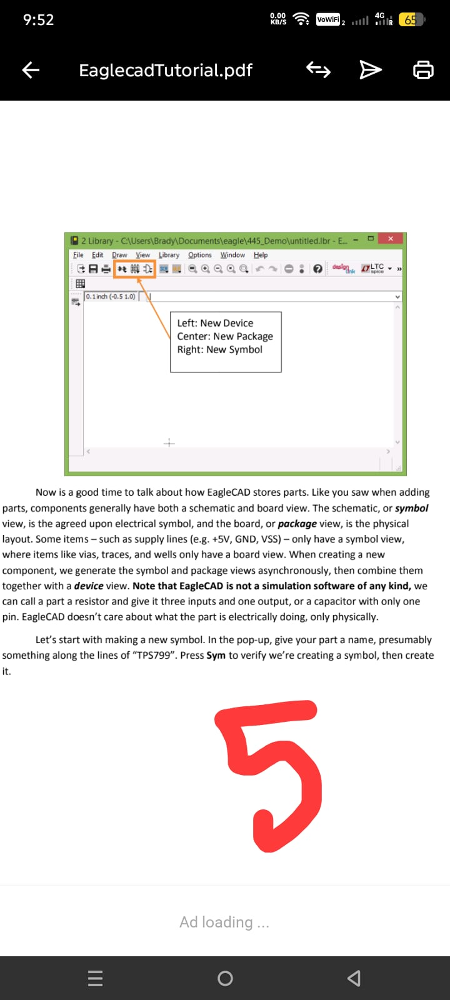
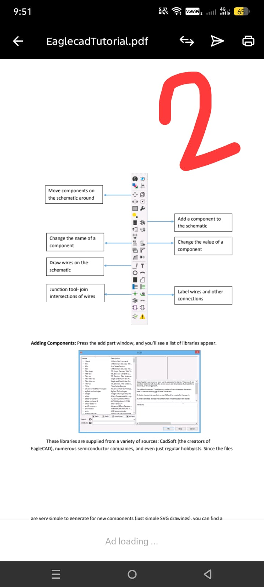
Creating a custom part — symbol + package + device
Eventually you'll need a part with no library entry (the TPS799 LDO is the classic student example). EAGLE stores a part in three pieces you build separately:
- Symbol — the schematic drawing. Add pins, name them (VIN, GND, EN, NC, VOUT), face the green I/O dots outward, then box the body with the LINE tool.
- Package — the physical footprint. Set a fine grid (e.g. 0.05 mm), add SMD pads at the correct size (e.g.
1.1 × 0.6mm for SC-70), and position them using the datasheet's mechanical drawing. - Device — combine symbol + package and use Connect to map each pin name to its pad number.
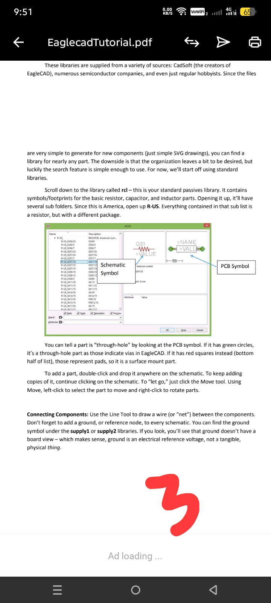
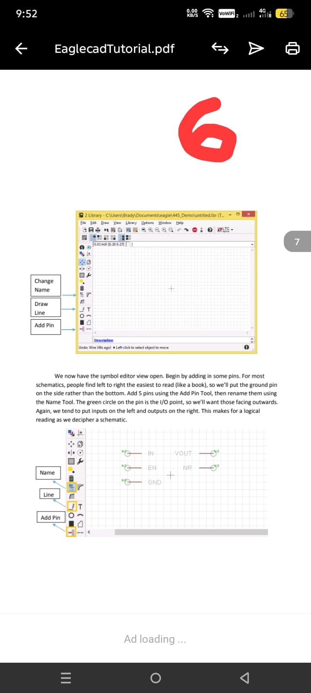
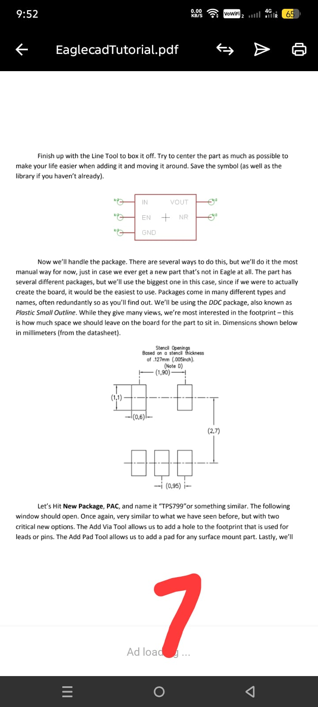
ref-packages library rather than redrawing footprints from scratch.Board layout — placement & routing
With a finished schematic, click BOARD on the toolbar — EAGLE creates a matching board file. Footprints appear outside the board outline, joined by yellow airwires showing required connections that still need copper traces.
- Drag footprints inside the white board outline. Group related parts: decoupling caps near IC power pins, crystals close to the MCU.
- Resize the board outline to match your enclosure or size requirements.
- Use ROUTE to convert each yellow airwire into a real copper trace. Right-click mid-route to change bend style.
- Use RIPUP to undo a trace segment and reroute it differently.
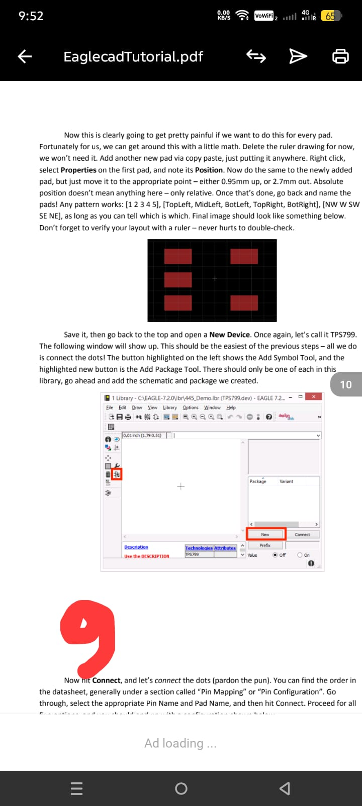
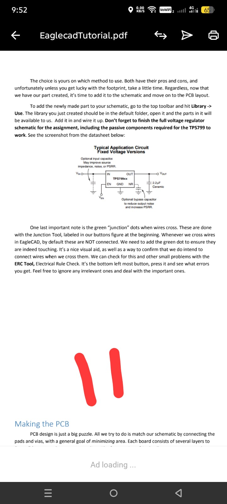
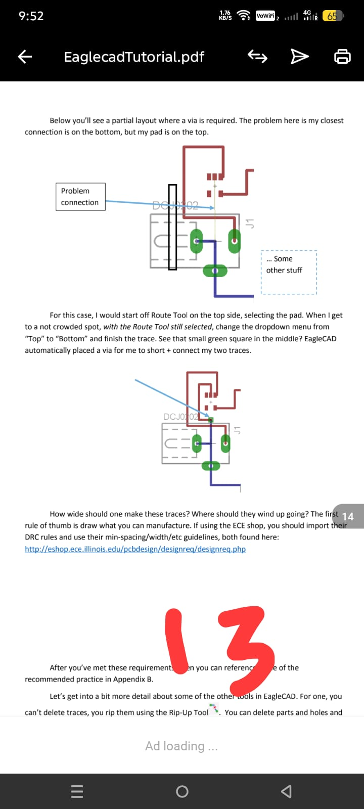
DRC, CAM & sending Gerbers to fabrication
Before exporting anything, run DRC (Design Rule Check). DRC enforces minimum trace widths, clearances and drill sizes — these numbers come from your fab house's process capabilities.
To generate manufacturing files, run the CAM Processor:
- Choose a CAM job (most fabs accept Gerber RS-274X — use the default job).
- Generate one Gerber file per layer:
Top Copper,Bottom Copper,Top/Bottom Solder Mask,Top/Bottom Silkscreen,Board Outline,Drill (NC-Drill). - Zip the complete Gerber set and upload to your fabricator's portal.
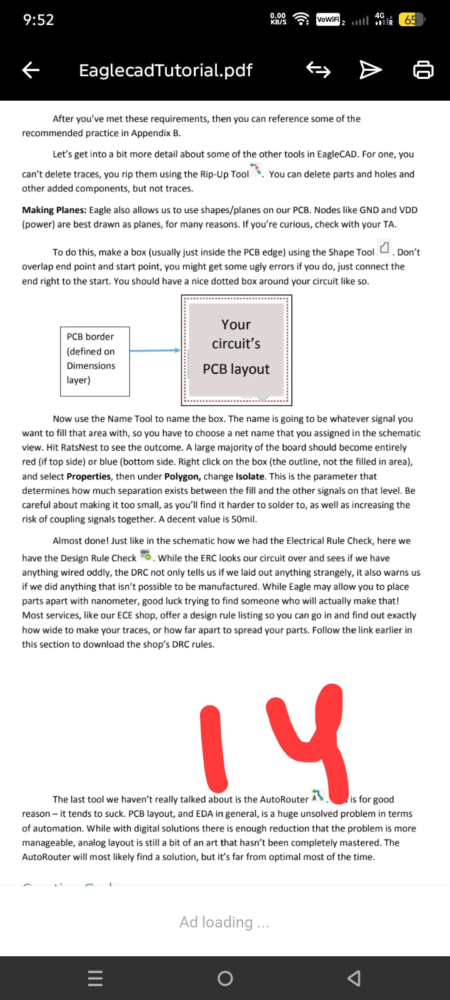
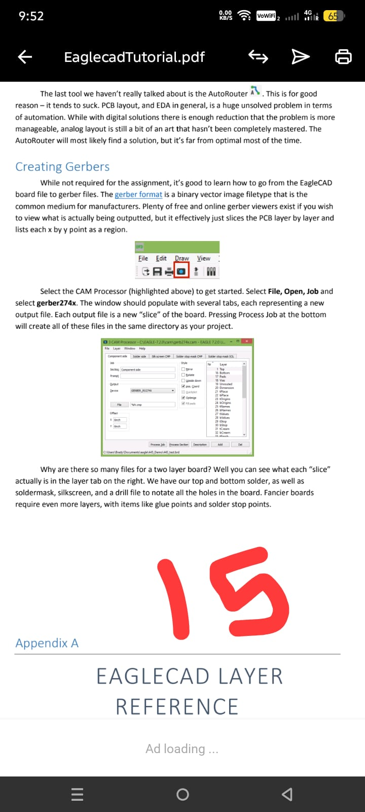
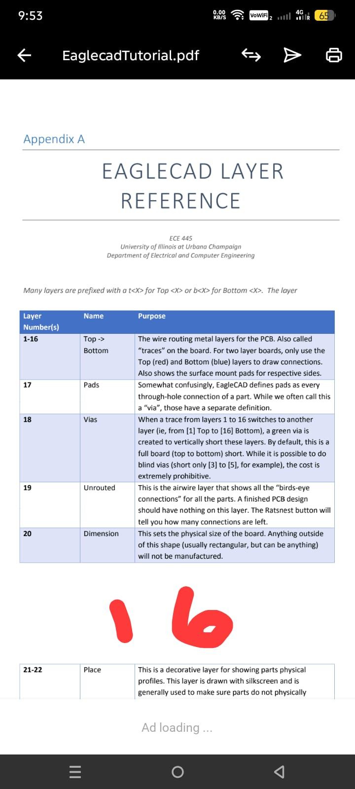